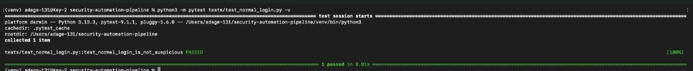
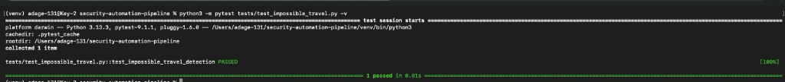
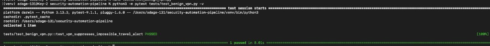

01
Explainable
Risk and confidence are separate, and the report shows how the assessment was produced.
Security engineering case study
Detects, enriches, scores, and responds to security events automatically.
A Python project that checks a suspicious sign-in, scores the risk, and writes a report. A person has to approve any action.
Synthetic events only. This is a portfolio lab, not a production detection benchmark.
Overview
A SOC cannot investigate every alert. This pipeline adds context, a separate confidence score, and a person in the loop before containment.
Read this first. It is a synthetic portfolio lab, not a production detection benchmark. Containment is simulated: it does not disable live accounts, revoke live sessions, or change firewall rules. A provider can fail without stopping the others, and missing evidence is listed instead of guessed.
Architecture
Five stages. Detect, enrich, score risk separately from confidence, hold containment for a person, then write the report.
Design choices
01
Risk and confidence are separate, and the report shows how the assessment was produced.
02
Containment is guarded by dry-run mode, allowlists, rate limits, approval, and pre-approved playbooks.
03
Benign and malicious scenarios are validated with automated pytest tests, including false-positive handling.
Results
Synthetic validation results only. These metrics are not production detection-performance claims.
The suite covers normal login, brute force, password spray, credential stuffing, success after failure, impossible travel, VPN suppression, Tor login, new device, and malicious versus benign cases.
Incident
The pipeline produced this report from synthetic events in sample_logs/.

Severity: CRITICAL
Risk Score: 86/90
Confidence: 10/10
Action: PREAPPROVED_PLAYBOOK_ONLY
Requires Approval: True
Automatic: False
Validation
Malicious sequences trigger. Benign activity stays quiet. VPN context can suppress a false impossible-travel alert.
Benign baseline

Detection

False-positive handling

Response
Automation stops at the decision. Containment waits for a person, and the lab records the action instead of sending it.
Nothing runs automatically. A person approves the playbook first. Critical cases stay on PREAPPROVED_PLAYBOOK_ONLY with approval required.
Allowlists sit in front of response actions, alongside the approval check.
Containment is simulated. The lab does not disable live accounts, revoke live sessions, or change firewall rules.
Response actions are rate limited, so a burst of alerts cannot fire a burst of actions.
Only a pre-approved playbook may be selected. The sample case does not run an unnamed action.
Response records an audit trail and keeps rollback mappings for the actions it knows.
Mapping
The sample case maps to four techniques. Each card is the behavior the report cited, not a claim that every technique in ATT&CK is covered.
Research
Risk prioritization is research-inspired, using ideas from AlertPro, NIST SP 800-30, MITRE ATT&CK, and recent SOC alert-prioritization research.
The score is research-inspired. It does not reproduce the cited models, and it does not calculate CVSS for alerts.
Setup
python3 -m venv .venv && source .venv/bin/activate pip install -r requirements.txt pytest
To run main.py, copy .env.example to .env first and fill in ABUSEIPDB_API_KEY, VIRUSTOTAL_API_KEY, GREYNOISE_API_KEY, and OTX_API_KEY.
Extend
It is MIT licensed. Fork it, extend it, and test your changes.
pytest, then change something and see what fails.Repository
detections/sign-in rulesenrichment/IP intel lookups and a local cacherisk/explainable score and severityresponse/approval, allowlists, playbooks, dry-run, audit, rollbackreports/text and HTML writers, plus reports/sample/tests/pytest suiteconfig/weights and thresholdssample_logs/synthetic eventsss/screenshots from lab runsdocs/this siteBuilt with Python 3.13, pytest, and requests. Reports are plain text and HTML.
Next
main.py currently enriches a single IP.